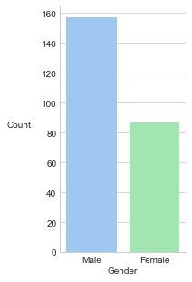

Exploratory Data Analysis
March 1, 2018
Exploratory Data Analysis
Before we can build models that can learn from data, we first need to understand its underlying structure and properties. This process is known as Exploratory Data Analysis (EDA), and is championed by mathematician John Tukey to “encourage statisticians to explore the data, and possibly formulate hypotheses that could lead to new data collection and experiments”. This article will focus on how data visualisation can aid EDA.
Import Libraries
import matplotlib.pyplot as plt
import pandas as pd
import numpy as np
import seaborn as sns # to retrieve the tips dataset
%matplotlib inline
Set Seaborn Visualisation Options
sns.set_style('whitegrid')
sns.set_palette('pastel')
Import Data
We will be exploring the “tips” dataset in seaborn, which contains data recorded by a waiter about the tips that he received.
tips = sns.load_dataset('tips')
tips.head(5)
| total_bill | tip | sex | smoker | day | time | size | |
|---|---|---|---|---|---|---|---|
| 0 | 16.99 | 1.01 | Female | No | Sun | Dinner | 2 |
| 1 | 10.34 | 1.66 | Male | No | Sun | Dinner | 3 |
| 2 | 21.01 | 3.50 | Male | No | Sun | Dinner | 3 |
| 3 | 23.68 | 3.31 | Male | No | Sun | Dinner | 2 |
| 4 | 24.59 | 3.61 | Female | No | Sun | Dinner | 4 |
For continuous variables such as total_bill and tip, a histogram succinctly captures its distribution by “bucketing” the values into discrete ranges.
bill_hist = sns.distplot(tips['total_bill'], kde=False)
bill_hist.set(xlabel='Total Bill', ylabel='Count')
bill_hist.set_ylabel(bill_hist.get_ylabel(), rotation=0, labelpad=25)
sns.despine()
Discrete variables such as sex and smoker can be summarized using a bar chart.
sex_counts = tips['sex'].value_counts().reset_index()
sex_counts = sex_counts.rename(columns={'index': 'gender',
'sex': 'count'})
sex_counts
| gender | count | |
|---|---|---|
| 0 | Male | 157 |
| 1 | Female | 87 |
# to control the aspect ratio of the plot
fig, ax = plt.subplots(figsize=(2.5,5))
sex_counts_bar = sns.barplot(x=sex_counts['gender'], y=sex_counts['count'])
ax.set_xlabel('Gender')
ax.set_ylabel('Count', labelpad=25, rotation=0)
sns.despine()

To understand the relationship between two continuous variables, such as total_bill and tip, we can place their values on a scatter plot. Here, we can see that in general, as total bill increases, tip increases too. However, there is some variance that cannot be explained simply by these 2 variables.
bill_tip_scatter = sns.regplot(x=tips['total_bill'], y=tips['tip'], fit_reg=False)
bill_tip_scatter.set_xlabel('Total Bill')
bill_tip_scatter.set_ylabel('Tip', rotation=0, labelpad=15)
sns.despine()
It will certainly be reasonable to believe that the time of day has a direct impact on the tips received. To confirm or denounce our hunch, we can plot a boxplot for the tips, split by the time of day.
tips['time'].unique()
[Dinner, Lunch]
Categories (2, object): [Dinner, Lunch]
# to control the aspect ratio
fig, ax = plt.subplots(figsize=(2.5, 6.5))
time_tip_box = sns.boxplot(x=tips['time'], y=tips['tip'])
time_tip_box.set_xlabel('Time')
time_tip_box.set_ylabel('Tip ($)', rotation=0, labelpad=20)
sns.despine()
Last, but certainly not least, is the mighty line plot to explore time-series data. For our example, we will explore Singapore’s population data.
year = [2005, 2006, 2007, 2008, 2009, 2010,
2011, 2012, 2013, 2014, 2015]
population = [4.2658, 4.4014, 4.5886, 4.8394, 4.9876, 5.0767,
5.1837, 5.3124, 5.3992, 5.4697, 5.535]
pop_line = sns.pointplot(x=year, y=population)
pop_line.set_xlabel('Year')
pop_line.set_ylabel('Population\n(millions)', rotation=0, labelpad=35)
sns.despine()